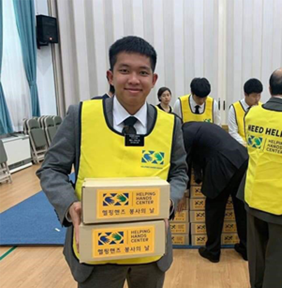
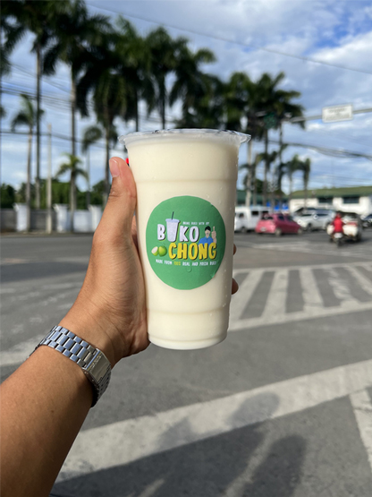
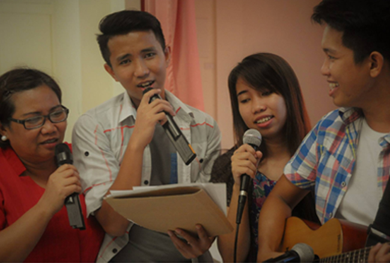

I live in Tagum City, Philippines (The very south part of the Philippines in the middle of nowhere) Time zone: Philippines (PHST) UTC/GMT +8 hours
I was born and raised in the Philippines. I am in a family of 3 Siblings; one older sister, one older bro and I am the youngest. I was raised by a single supermom.
I was born on March 1999 now 23 years old. I served my mission last Jan 2018 to Jan 2022 at Korea Busan Mission. Probably the best 2 years of my life.
I love to learn, that is my hobby. I love music. I play guitar and other weird instruments. I go fishing every Saturday mornings. I ride my motorcycle around places. I speak 4 languages, and I love travelling to different places. I also love to read books and listen to podcast.
Currently, I am jobless. Just kidding. I own a business called BUKOCHONG. We process young coconut and sell them. While doing that, I also study here online. I'm loving our class and I get so excited when I learn new things about computers.
One of my goals in life is to learn as much as I can. I love to experience the amazing gifts that God gave to us and use it to build His kingdom here on earth.
 